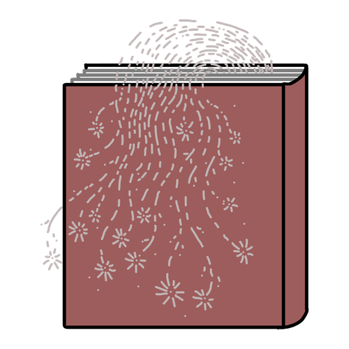

Talking Rhubarb Media
Let's do an experiment.
Scroll through, and see how your picture of me changes along the way.
How do you feel about me as you read this mini-bio?
I'm Dr. Reyhaneh Maktoufi, a communication and narrative strategist, an artist, and a National Geographic Explorer. I help researchers, leaders, institutions, and media teams turn complicated work and challenging topics into campaigns and stories that build trust.
You might perceive me as competent (I hope!) but you probably don't know much else about me. Am I nice? Am I honest? Am I relatable?
Being competent is not enough to get others to trust you!
Think Dr. Frankenstein or all the evil scientists of movies!
You also need to show that you are caring, honest, and empathetic.
Ok let's try something else…
When I was a teenager, I had a Metallica/Nirvana phase. I thought I'd grow up to be this dark, mysterious, cool girl, but unfortunately for teenage Rey, I grew up to be delightful!! I love colors and fun, I'm definitely an over-sharer, and I spend a significant part of my work getting cool experts to open up and be vulnerable.
I worked in a hospice in Iran as a grief facilitator for about three years. Families often wanted their dying loved ones to stay positive, fight, or do something different, but what my patients really wanted was for someone to be there, listen, and help them slow down and experience the small beautiful moment — and more than a decade later, I see that most of us, when facing challenges, don't want to be persuaded, but supported, seen, and heard.
How do you feel about me now? Do you have a better understanding of why I do what I do? About my personality? The kind of person I am?

Stories can be a helpful tool to help others connect with you.
Even if they are just a few lines long.
I'm a social scientist & creative storyteller, here to help you communicate your expertise in ways that build trust & get you closer to your desired impact.
Now you have the full picture of me.